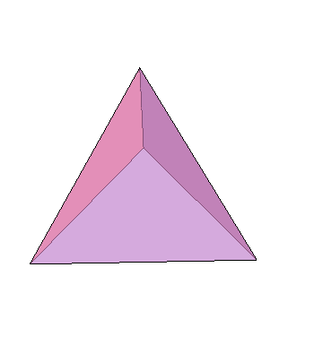
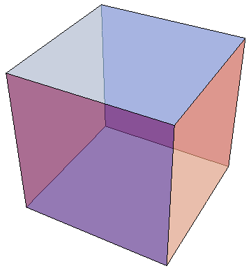
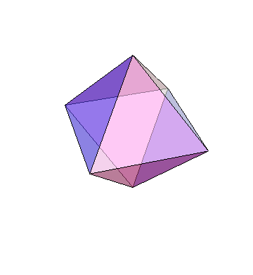
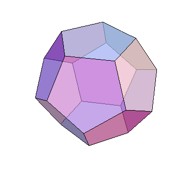
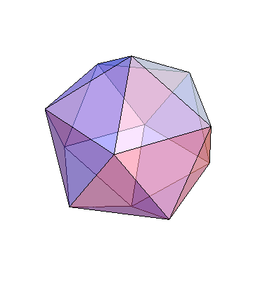

Platonic solids
For some reason, our mind has evolved in such a way as to deeply and inherently appreciate symmetry. We seek it everywhere and identify it automatically. Nature seems also to appreciate symmetry, as evident in living creatures, plants and some inanimate objects. A fact that may be understood from principles of efficiency and energy minimization under certain constraints. Even more profoundly, the fundamental laws of nature exhibit certain symmetries, a fact that has become a central and guiding idea in physics when formulating new theories. The central symmetry that must be fulfilled by all possible theories of nature is symmetry under the Poincare Group. This group contains various elements which correspond to different transformation that can be applied on an equation or an action without changing their content or resulting equations of motion and solutions. The Poincare group is of dimension 10 which means that 10 parameters are required to generate any element of the group, these contain the 6 types of transformations of the Lorentz group (3 boosts and 3 rotations) and 4 translations in time and space. One of the most fundamental symmetries of nature is called CPT symmetry which states that all processes are symmetric under the combination of time reversal followed by spatial inversion (parity) and followed by complex conjugation (particle$\rightarrow$anti-particle), however there could be processes which are not symmetric under one of the mentioned operations. Interestingly these three transformation result in a joined parity transformation of space and time, which can be obtained as a combination of three boosts with an imaginary rapidity ($\chi=\pm i\pi$). In particle physics, the elementary particles and forces (except for gravity) are described in terms of symmetry groups which are essentially rotations in the space of the elementary particles, and the generators of those groups are the force carriers. The standard model of particle physics describes the strong force, weak force and electromagnetism as a direct product of three groups of different dimensions: $SU(3)\otimes SU(2)\otimes U(1)$.The presence of symmetry in physics is fundamental and broad in all areas of physics. Here I want to focus on a much simpler example than discussed before, after viewing a lecture by Nobel laureate Frank Wilczek. Therefore, some of the ideas are based on that talk.
Perhaps one of the first examples of relating symmetry and the real world is the Platonic solids named after the Greek Philosopher Plato. Plato claimed based just on elegance and beauty, that the 5 solids are related to the 4+1 elements of the Universe (fire, water, earth, air, universe). The Platonic solids are beautiful 3-dimensional objects which show a large degree of symmetry. The solids belong to the set of convex polyhedra (composed of flat faces, straight edges and vertices, and are closed meaning that the line between any two points within the solid is contained within it as well). Their beauty arises from their face being regular polygons (equal sides and equal angles), with the same number of polygons meeting at every vertex. These are basically the natural generalization of regular polygons in 2D. However, unlike in 2D where one can make an infinite number of regular polygons by increasing the number of edges (reaching a circle in the limit of infinite edges), once you go to 3 dimensions, suddenly there are only 5 such objects, which is much less than infinity, and therefore surprising. Also, in 3D in analogy to 2D the ultimate symmetrical shape is of course the sphere. So why are there only 5 such objects and what are they? To answer these questions we first need to understand a fundamental formula of planar graphs.
Euler's Formula states that for a finite, connected, planar graph G=(V,E) (with vertices V and edges E) with $v\ge 1$ vertices, $e$ edges and $f$ faces, the following holds: \begin{equation} v-e+f=2 \end{equation} The proof of this formula uses induction on the number of edges $e$:
base case $e=0$: $v=1$, $f=1$ and we have $v-e+f=1-0+1=2$ as required.
induction step: assume that for any planar connected graph with $v$ vertices, $e\le n$ edges and $f$ regions: $v-e+f=2$. Now consider a graph with v vertices, $n+1$ edges and $f$ regions. There are two cases, if G is a tree then the number of edges is one less than the number of vertices $e=v-1$, and since there are no circles in a tree, $f=1$ (the outer region), and we get $v-e+f=v-v+1+1=2$ as required.
In the second case, $G$ is not a tree and therefore there is a cycle C. consider the sub graph of G without one of the edges of the circle $G'=(V,E\backslash e_1)$. $G'$ is still connected and planar, but has one fewer regions $f=f-1$, and $e=n$. Since $e=n$ it fits in the inductive assumption and we have for $G'$: $v-e+f=v-n+(f-1)=2$ this can also be written as $v-e+f=v-(n+1)+f=2$, which implies that for the graph $G$ with $v$ vertices, $n+1$ edges and f regions the formula also applies, completing the proof by induction, and thus the formula applies for all $e\ge0$. Q.E.D
How does this relate to polyhedra and the Platonic solids? The crucial connection is the fact that graphs drawn on a sphere follow the same Euler formula which we proved for the case of a plane. Therefore any convex polyhedron can be projected with its vertices and edges on the sphere and the sphere can then be punctured and turned into a 2D plane. This means that any planar graph (whose definition requires having no edges crossing) can be equivalently drown on the surface of a sphere. Mathematically this is stated by saying that the set of all planar graphs is equal to the set of all graphs with a genus of zero, $g=0$. The genus is the subscript of the first surface on which the graph can be drawn without edge-crossing. For example, $S_0$ is the sphere, $S_1$ is the torus. Now we can move to consider the allowed number of edges, vertices and faces to fulfill the requirements for the Platonic solids. We denote the number of edges of the regular polygons with $s\ge 3$, and the degree of each vertex by $k\ge 3$ since the angles of the polygons are less than $180$ degrees.
Next we make the following observations:
• $2e=vk$, this follows from the fact that twice the number of edges equals the sum of the degrees of the vertices, since we count twice every edge from the two vertices that are connected by an edge. since we have $v$ edges and each with k vertices, the right hand side is $vk$.
• $2e=sf$, this follows from the fact that each face has $s$ edges, and each edge separates two regions, therefore we count the edges twice by counting the number of faces times the edges of each face.
Plugging these into Euler's formula we have: \[ \frac{2}{k}e-e+\frac{2}{s}e=2 \\ \frac{2}{k}+\frac{2}{s}-1=\frac{2}{e} \\ \frac{2s+2k-ks}{ks}=\frac{2}{e} \\ e=\frac{2ks}{2s+2k-ks} \] \begin{equation} e=\frac{2ks}{4-(k-2)(s-2)} \end{equation} from this we have using the previous relations: \begin{equation} v=\frac{2s}{4-(k-2)(s-2)} \end{equation} \begin{equation} f=\frac{2k}{4-(k-2)(s-2)} \end{equation}
From $(2)$, $(3)$, and $(4)$ we can construct different polyhedra by plugging values of $k$ (vertices degree) and $s$ (polygon edges). The possible values are: $(k,s)=(3,3),(3,4),(4,3),(3,5),(5,3)$, and these are the only possible values from which we get positive $e,v,f$.
These correspond to the following :
$(k,s)=(3,3)$ : Tetrahedron
$(k,s)=(3,4)$ : Cube
$(k,s)=(4,3)$ : Octahedron
$(k,s)=(3,5)$ : Dodecahedron
$(k,s)=(5,3)$ : Icosahedron
|  |  |  |  |  |
| Tetrahedron | Cube | Octahedron | Dodecahedron | Icosahedron |